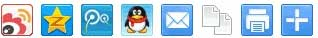
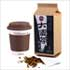
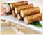

当前位置： 主页 > 带你了解食补养生
养生季节之春季 吃什么才能达到养生效果
标签：春季养生 食补健康 发布：2013-02-20 14:51:01
春季吃什么食物对身体有益，不同的食物，营养成分也是各不相同，为了我们的健康，一定要注重每种营养成分的摄入，重要的前提就是为了健康。
初春阳气初发，辛甘之品可助春阳。因为，酸性食物入肝，甜性食物入脾。多食酸可引起胃酸分泌障碍，影响消化吸收，应少食酸涩、减少脾胃功能的负担。说到这，很多人很困惑，仍然不知道需要吃什么
下面我就具体说一下。
一、最适合的补品：大枣蜂蜜最养肝
春天是肝气最足、肝火最旺的时候，所以在饮食上我们要多选择护肝健脾的食物，应添加大枣、蜂蜜、山药、莲子、芡实，可以每天做一点粥来食用，不仅可以帮助护肝健脾胃，还可以帮助滋补、增加气血、预防春困。
二、最适合的口味：省酸增甘
初春阳气初发，辛甘之品可助春阳。所以在春季应该增甘减酸。因为，酸性食物入肝，甜性食物入脾多食酸可引起胃酸分泌障碍，影响消化吸收，应少食酸涩、减少脾胃功能的负担。
为了预防肝旺伤脾，适合选择辛甘的食物：葱、生姜、枣、花生、小麦粉、荞麦、玉米等谷物果。阴虚内热之人，可选择鸭肉、海带、绿豆、甘蔗汁、荸荠、百合等，以消火。
三、最适合的青菜：小白菜、油麦菜
由于春天经常容易困倦，所以这个时候一定要减少脂肪的摄入，可适当增加蛋白质的食物，如蛋类、牛奶、鱼类、豆制品，鸡鸭肉等，以增强免疫力;多增加绿叶蔬菜，以补充矿物质和维生素及各种抗氧化物质，蔬菜中丰富的营养物质也可预防春困，及有效地帮助我们达到瘦身的目的。
在蔬菜的选择上，以深绿色蔬菜为住，叶菜为佳，其营养价值较高，同时热量极低。由于经过冬季缓慢生长的绿叶蔬菜可以说营养物质积累丰富，超过其他季节的蔬菜，外加上冬季气温低、无虫害、农药干扰少，食用起来安全性好、对人体健康尤为有益。
分享到：
相关内容
- 越南在饲养金丝燕体内发现H5N1型禽流感病毒 2013.04.13
- 钟南山称H7N9禽流感未现人传人 公众不必恐慌 2013.04.13
- 世卫组织：不建议就禽流感在入境口岸特别筛查 2013.04.13
- 北京官方详谈首例人感染H7N9禽流感病例 2013.04.13
- 福建制定人感染H7N9禽流感中医药防治方案 2013.04.13
微信“扫一扫”
对准左侧二维码添加关注。

猜你喜欢
I GUESS YOU LIKEYS养生排行榜
-

1st
滋阴补肾茶漠蓉保健养生茶淘宝店铺： 漠蓉尚品官方
本月售出： 19860 件 -
2nd
滋阴补肾茶漠蓉保健养生茶淘宝店铺： 漠蓉尚品官方
本月售出： 19860 件 -
3rd
滋阴补肾茶漠蓉保健养生茶淘宝店铺： 漠蓉尚品官方
本月售出： 19860 件 - 4 内蒙古托县野生枸杞王
5050 件
- 5 内蒙古托县野生枸杞王
5050 件
- 6 内蒙古托县野生枸杞王
5050 件
- 7内蒙古托县野生枸杞王
5050 件
- 8 内蒙古托县野生枸杞王
5050 件
-

适合男性冬季进补的饮食方案
冬季是养生进补的好时节男人作
-
适合男性冬季进补的饮食方案
冬季是养生进补的好时节男人作
-
适合男性冬季进补的饮食方案
冬季是养生进补的好时节男人作
-
适合男性冬季进补的饮食方案
冬季是养生进补的好时节男人作
-
适合男性冬季进补的饮食方案
冬季是养生进补的好时节男人作